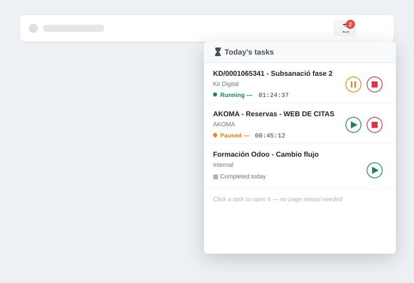
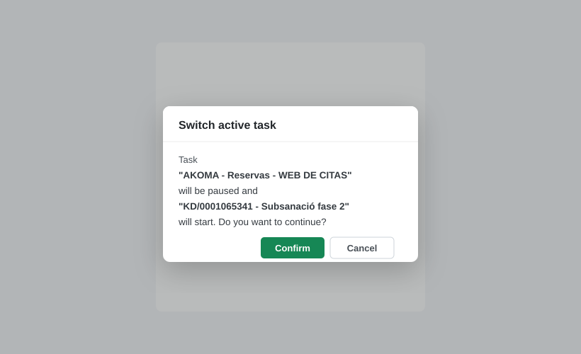

A small clock icon in the systray shows a live badge with how many timers are currently running. Click it to open a dropdown listing every task you've started or logged time on today — sorted with running tasks first, then paused, then completed — each with a live elapsed-time counter and its own inline Pause, Resume and Stop controls. Click a task's name to jump straight to its form when you need more detail.

Only one timer can run at a time. If you start a new task while another is already running, a quick confirmation dialog lets you switch cleanly — pausing the old task and starting the new one — so you never lose track of time by accident.

Live Systray Overview
One-Click Timer Controls
Smart Task Switching
Jump Straight to the Task